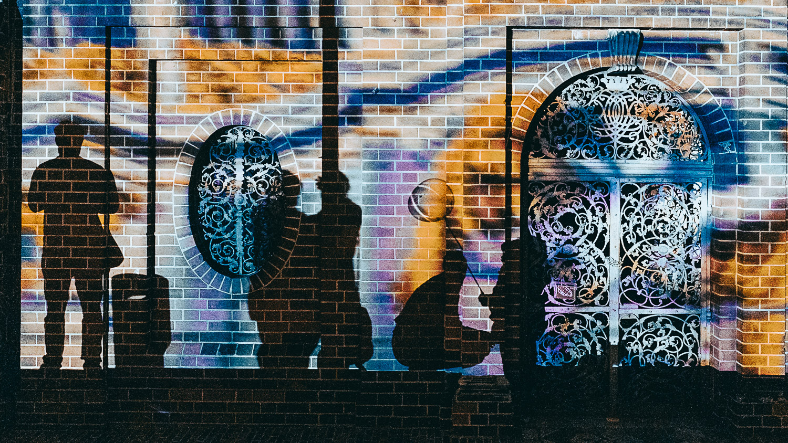
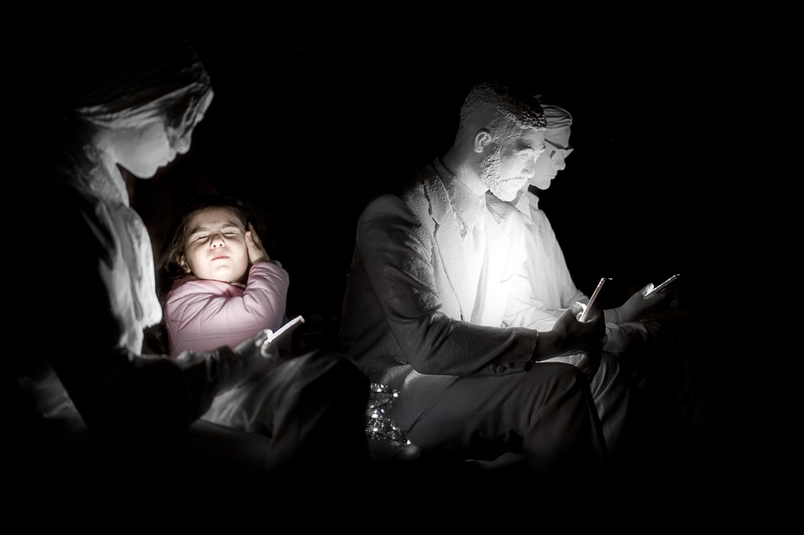
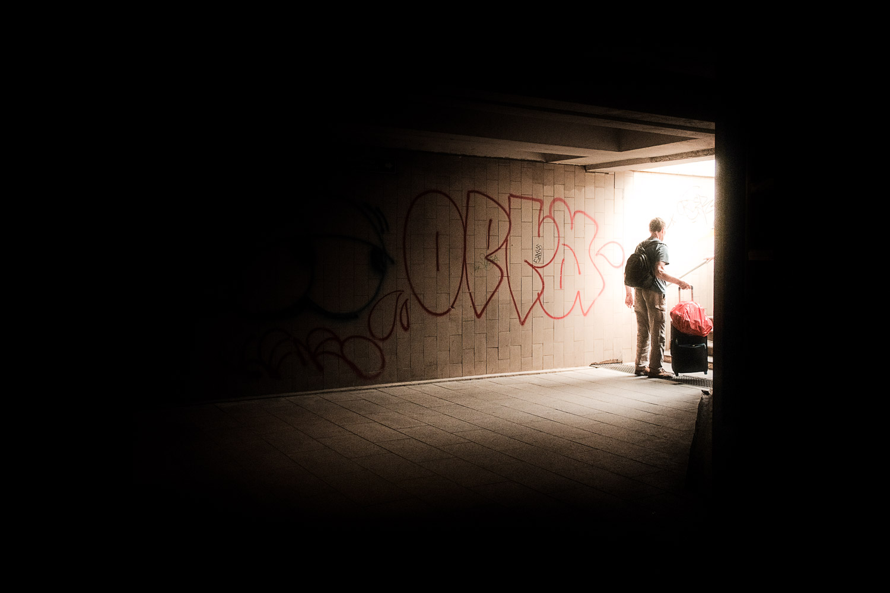
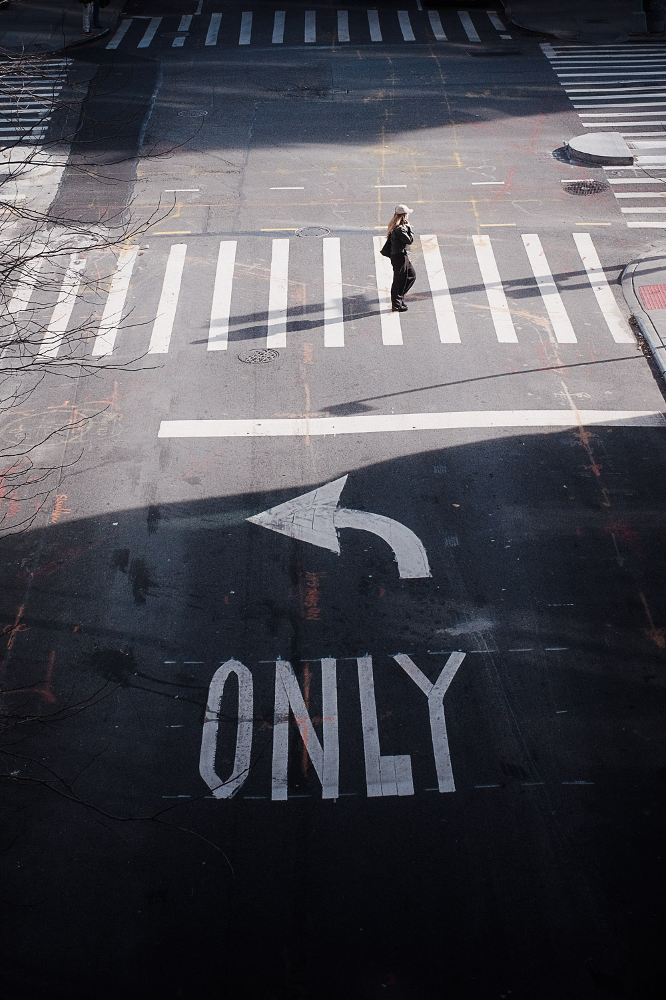

Pl. I · MCMLXXXIV
Kolonnade, 16 Uhr
3 of 7 remain
€ 850
“Each photograph arrives the way a memory arrives — uninvited, unfinished, and already beginning to fade.” — D.S., Studio note, winter




Dennis Schmidt was born in Berlin in 1985. He has since lived and worked, at various stages of his life, in Sydney, Bangkok, New York, San Francisco, Singapore, Barcelona and Medellín — each city leaving its weather somewhere in the work.
He returned to Berlin and keeps a small atelier on the Maybachufer, in Neukölln, where each edition is prepared by hand, numbered in graphite, signed, and sealed with the house mark.
Éditions I–X constitutes the current catalogue. Once an impression is released it is not reprinted, reissued, or made available in any further format.
Editions are released privately. To reserve an impression, or to request the full provenance document and sizing for a specific plate, please write to the atelier directly.
All works are delivered numbered, signed in graphite, and accompanied by a signed certificate of authenticity. Framing available on request at additional cost.
Prices listed in Euro, exclusive of VAT where applicable. International shipping insured and handled by specialist fine-art couriers. Once an edition is closed it is never reprinted or reissued.